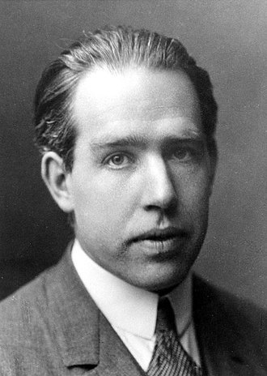
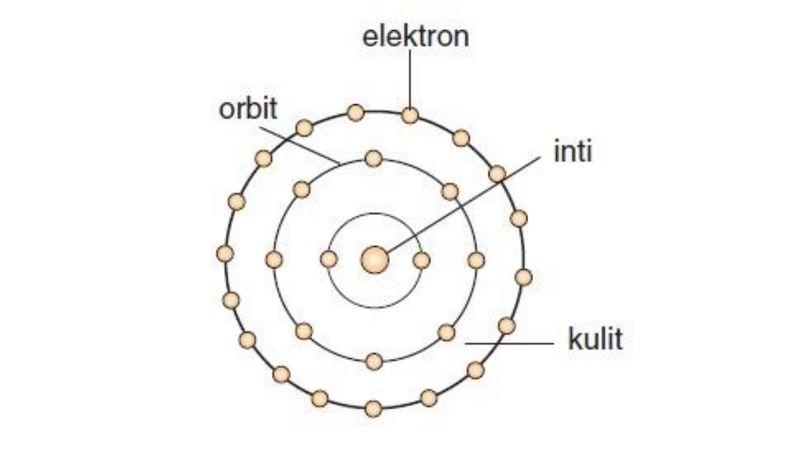

Teori Atom Bohr pada prinsipnya menggabungkan teori kuantum Planck dan
teori atom dari Ernest Rutherford. Bohr menyebut, apabila elektron dalam
orbit atom menyerap suatu kuantum energi, elektron akan meloncat keluar
menuju orbit yang lebih tinggi. Begitu pula sebaliknya, jika elektron
tersebut memancarkan suatu kuantum energi, maka elektron akan jatuh ke
orbit yang lebih dekat dengan inti atom.

Niels Bohr
Teori Atom Bohr Menyatakan:
Atom terdiri dari inti yang bermuatan positif dan di sekitarnya
beredar elektron-elektron yang bermuatan negatif.
Dalam atom, elektron beredar mengelilingi inti atom pada orbit
tertentu yang dikenal sebagai keadaan gerakan yang stasioner.
Selanjutnya ini disebut dengan tingkat energi utama atau bilangan
kuantum atau kulit.
Sepanjang elektron berada dalam lintasan stasioner, energi akan
konstan, sehingga tidak ada cahaya yang dipancarkan.
Elektron hanya dapat berpindah dari lintasan stasioner yang lebih
rendah ke yang lebih tinggi jika menyerap energi. Dan sebaliknya,
jika elektron berpindah dari lintasan stasioner yang tinggi ke yang
rendah terjadi pembebasan energi.
Model Atom Bohr

Kelebihan Teori Atom Bohr:
Teori ini mampu menjawab kelemahan dari Teori Atom Rutherford dengan
mengaplikasikan teori kuantum.
Mampu menerangkan dengan jelas tentang garis spektrum pancaran
(emisi) atau serapan (absorpsi) dari atom hidrogen.
Kelemahan Teori Atom Bohr:
Tidak dapat menjelaskan efek Zeeman dan efek Stark
Efek Zeeman adalah peristiwa terpecahnya garis spektrum atom menjadi
dua atau tiga bagian akibat pengaruh medan magnet. Dan Efek Stark
adalah peristiwa terpecahnya garis spektrum atom menjadi
bagian-bagian akibat pengaruh medan listrik eksternal.
Teori atom Bohr mengabaikan efek relativistik yang terjadi pada
partikel yang bergerak dengan kecepatan sangat tinggi.
Teori atom Bohr tidak dapat menjelaskan mengapa elektron dianggap
sebagai partikel, bukan sebagai partikel dan gelombang.